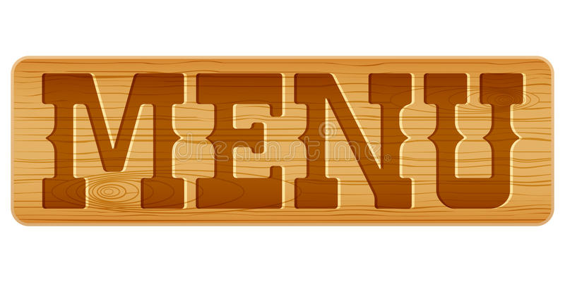

La aspiración es una palabra que tiene varios significados, uno de los cuales está relacionado con el de la idea personal, las personas tienen metas y objetivos que desean cumplir, lo cual está muy vinculado a la idea de deseos que una persona tiene para sí misma.
Se entiende por proyecto a una planificación consistente en un conjunto de actividades que se encuentran interrelacionadas y coordinadas, con el fin expreso de alcanzar resultados específicos en el marco de las limitaciones impuestas por factores previos condicionantes: un presupuesto, un lapso de tiempo o una serie de calidades establecidas.